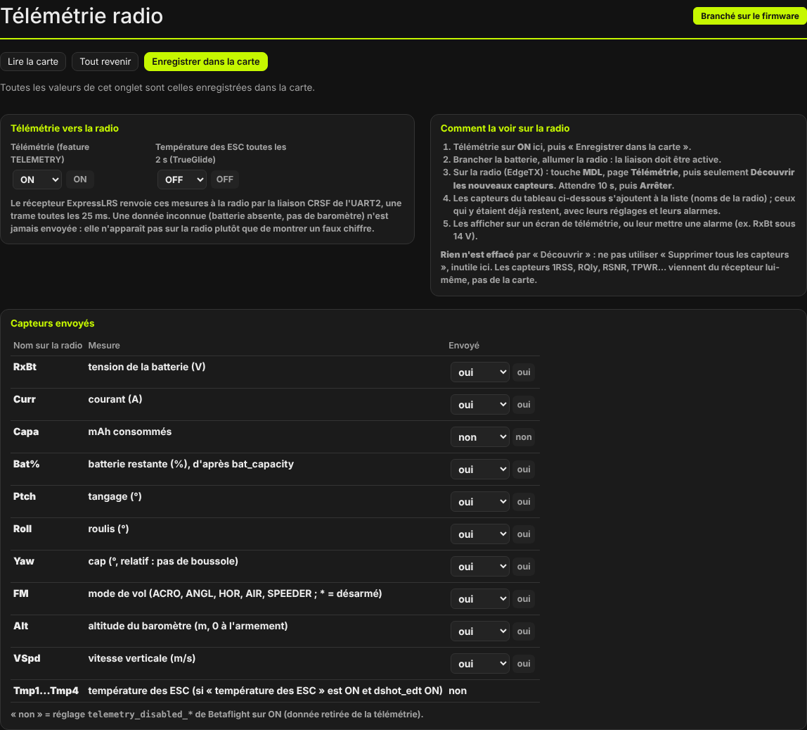
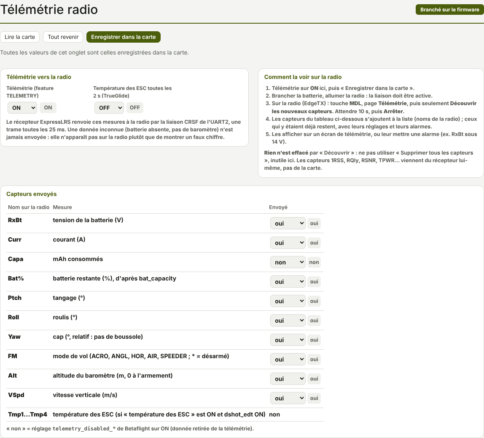

TRUEGLIDE
TRUEGLIDE Télémétrie radio
L'onglet Télémétrie radio (groupe Fonctions TrueGlide) règle les mesures que la carte renvoie à la radio : tension, courant, attitude, mode de vol, altitude… La radio peut les afficher ou déclencher une alarme.


Activer la télémétrie
- Télémétrie (feature TELEMETRY) (
telemetry) : OFF par défaut, ON sur KarRmen. - Température des ESC toutes les 2 s (TrueGlide) (
crsf_tlm_esc_temp) : OFF par défaut. Elle demande aussi la télémétrie DShot étendue (dshot_edtON, onglet Moteurs) et des ESC qui envoient leur température.
Le récepteur ExpressLRS renvoie ces mesures à la radio par la liaison CRSF de l'UART2, une trame toutes les 25 ms. Une donnée inconnue (batterie absente, pas de baromètre) n'est jamais envoyée : elle n'apparaît pas sur la radio plutôt que de montrer un faux chiffre.
Ce qu'XPro envoie
Le cadre Capteurs envoyés liste les capteurs sous leur nom sur la radio. La colonne Envoyé retire
un capteur de la télémétrie (« non » = réglage telemetry_disabled_* sur ON, comme dans
Betaflight).
| Nom sur la radio | Mesure | Envoyé par défaut |
|---|---|---|
| RxBt | tension de la batterie (V) | oui |
| Curr | courant (A) | oui |
| Capa | mAh consommés | non |
| Bat% | batterie restante (%), d'après bat_capacity | oui |
| Ptch | tangage (°) | oui |
| Roll | roulis (°) | oui |
| Yaw | cap (°, relatif : pas de boussole) | oui |
| FM | mode de vol (ACRO, ANGL, HOR, AIR, SPEEDER ; * = désarmé) | oui |
| Alt | altitude du baromètre (m, 0 à l'armement) | oui |
| VSpd | vitesse verticale (m/s) | oui |
| Tmp1…Tmp4 | température des ESC | non (crsf_tlm_esc_temp et dshot_edt sur ON) |
Depuis la 0.8.4, la batterie restante part de la charge estimée au branchement (tension au repos d'un élément), moins les mAh consommés. Les capteurs 1RSS, RQly, RSNR, TPWR… viennent du récepteur lui-même, pas de la carte.
La voir sur la radio
- Télémétrie sur ON dans l'onglet, puis Enregistrer dans la carte.
- Brancher la batterie, allumer la radio : la liaison doit être active.
- Sur la radio (EdgeTX) : touche MDL, page Télémétrie, puis seulement Découvrir les nouveaux capteurs. Attendre 10 s, puis Arrêter.
- Les capteurs du tableau s'ajoutent à la liste de la radio ; ceux qui y étaient déjà restent, avec leurs réglages et leurs alarmes.
- Les afficher sur un écran de télémétrie, ou leur mettre une alarme (par exemple RxBt sous 14 V).